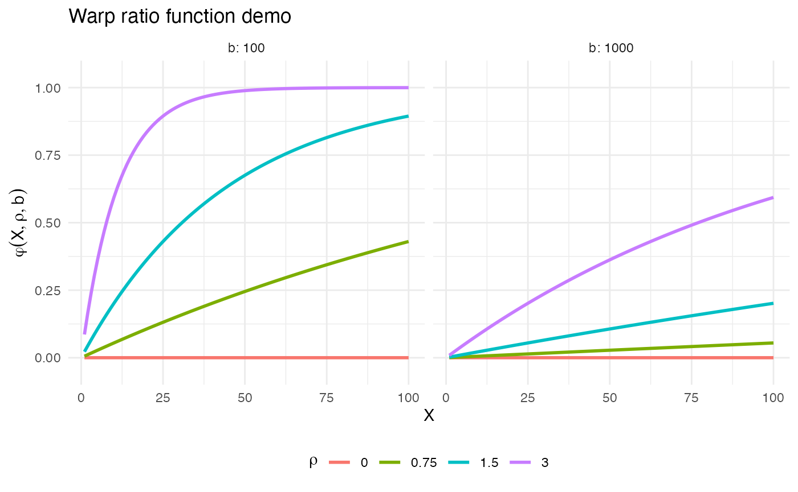
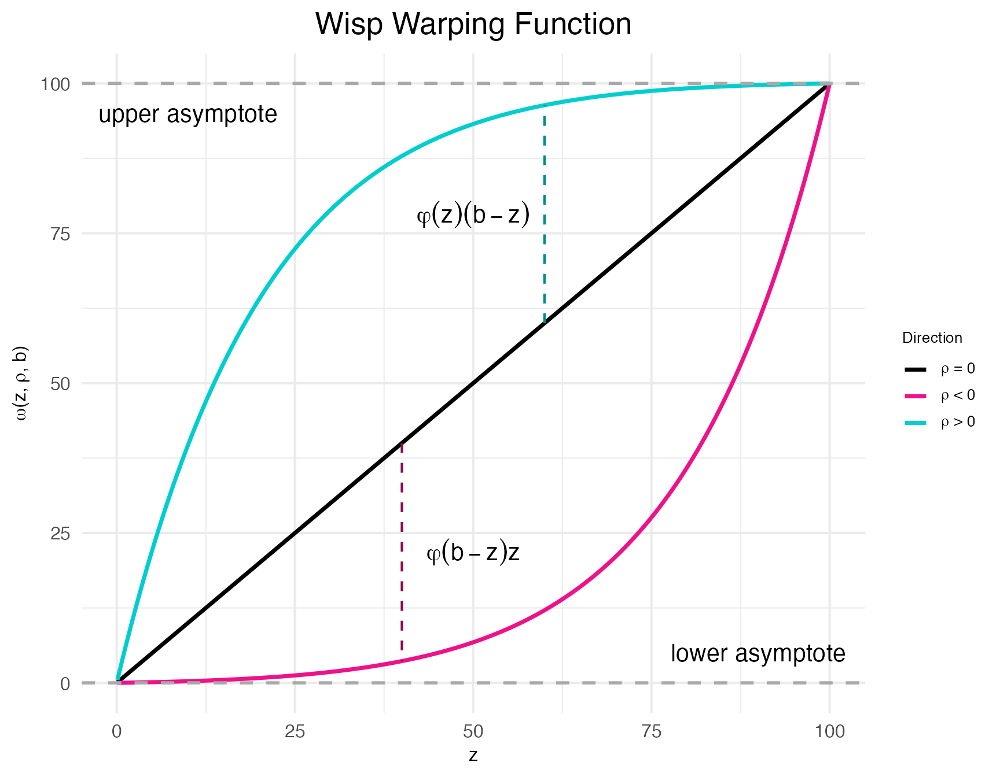
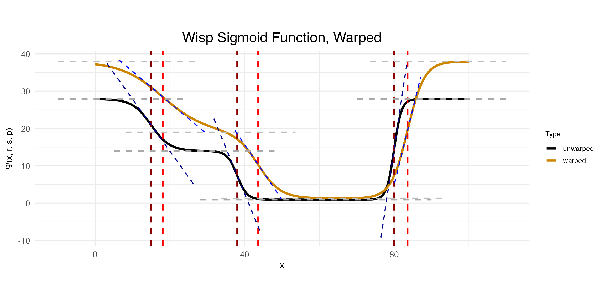

Random effects and warping
Michael Barkasi
2026-03-01
tutorial_warping.RmdIntroduction
Separating signal from noise is a central issue in science. Observations of a variable reflect both the true expected population value and random variation. The lower the sample size, the more random variation will influence the observed values.
A common method for dealing with random variation is to normalize observations. For example, with our somatosensory cortex data, we could have tested the effect (if any) of hemisphere on transcript spatial distribution by making the point of highest expression rate equal across the hemispheres (e.g., both set to one), then rescaled the other values accordingly. These rescaled, i.e., normalized, values would then be used in our statistical tests or regression modeling. Alternatively, instead of normalizing, we could model the raw data, but use a regularization technique to prevent overfitting to the random variation. For example, ELLA uses L1 regression to good effect to control false-positive and false-discovery rates.
In the context of spatially variable genes, regularization is a better option than normalization, as normalization can wash out differences in spatial distribution (Salim et al 2025, Bhuva et al 2024). However, there is a third approach to handling sample noise: explicitly modeling the random variation as a random effect. Models with random-effect terms are often called mixed-effects models, as they contain both fixed-effect terms (e.g., the effect of hemisphere on expression rate) and random-effect terms (e.g., the random variation in expression rate due to sample-specific factors). Wisp models are mixed-effects models. They employ a random-effect term to factor out individual variation.
Random-effect structure
In a traditional linear mixed-effects model, the observations y are modeled as a function of some fixed effects \mathbf{X}\beta plus random effects \mathbf{Z}\rho plus noise \epsilon, for covariate design matrices \mathbf{X} and \mathbf{Z}, fixed-effect coefficients \beta, random-effect coefficients \rho, and noise \epsilon: y = \mathbf{X}\beta + \mathbf{Z}\rho + \epsilon Recall the logistic function: \psi(x,r,s) = \frac{r}{1 + \exp({sx})} Also recall that a wisp models the log transform (plus one) of expression rate \lambda as a function of the poly-sigmoid function: \Psi(x,r,s,p) = r_1 + \sum_{i=1}^n \psi(x - p_i, r_{i+1} - r_{i}, -s_i) of spatial position x, rates r, slopes s, and transition points p.
A possible suggestion is to treat random effects for individual samples k just as in the linear case, as an additive term: \log_e(\lambda + 1) = \Psi(x,r,s,p) + \rho(k) However, this proposal is unworkable. From an intuitive point of view, a constant value added across the entire space could at best be a very rough approximation of the true random effect. More importantly, there are bounds to consider. The predicted rate \lambda must be positive. There will be many cases in which \lambda is well above zero for some points x and near zero for other points x, while some k has a negative random effect \rho(k) in the high-expression region with a magnitude larger than the predicted rate in the low-expression region. This situation could be avoided if \rho were also a function of x, but that only raises the question of how to model \rho(x,k). For example, a function \rho linear in x certainly would not solve the problem.
Another potential solution would be to treat \rho as a function of \Psi itself: \log_e(\lambda + 1) = \rho(\Psi(x,r,s,p), k) However, on this proposal \rho would only be sensitive to changes in predicted rate. It would be indifferent to the other spatial parameters (transition slopes s and transition points p). This problem has an obvious solution: the random-effects \rho should be applied directly to the spatial parameters: \log_e(\lambda + 1) = \Psi(x, \rho_r(r,k), \rho_s(s,k), \rho_p(p,k)) Still, it’s not clear what form \rho should take. In addition, each spatial parameter comes with its own bounds. All three spatial parameters have a lower bound of zero, while transition points are bounded above by the maximum spatial position (e.g., bin 100 in our cortex data). Thus, whatever form \rho takes, it must respect these bounds.
Warping
To solve our problem about the form of \rho, let’s distinguish between:
- some scalar value unique to sample k and parameter z which specifies how much the value of z for k is off what’s expected, and
- a function which transforms z according to this value, in a way that respects the bounds on z, consistent across all k.
Let’s reserve the symbol “\rho” for the scalar value (or a vector of these scalar values) and use the symbol “\omega” for the transforming function. Let’s also assume that \rho\geq 0 indicates values above what’s expected, and \rho<0 indicates values below what’s expected. If \Delta(z,b) = b - z is the distance from z to the upper boundary b and we assume that z\leq b, then: \begin{array}{l l} z \leq \omega(z, b) \leq z + \Delta(z,b) & \text{ if } \rho\geq 0 \\ z \geq \omega(z, b) \geq 0 & \text{ if } \rho < 0 \end{array} Thus, a possible form for \omega would use a ratio term \varphi between zero and one to scale the distance to the upper boundary according for positive \rho and to scale z itself down towards zero for negative \rho: \omega(z, b) = \begin{cases} z + \varphi(\rho)\Delta(z,b) & \text{if } \rho \geq 0 \\ z - \varphi(\rho)z & \text{if } \rho < 0 \end{cases} What form could this function \varphi take? There are a few constraints to consider:
- When \rho=0, \varphi should be zero, so that \omega(z,b)=z. That is: \varphi(0) = 0.
- \varphi is a smooth function for all values of \rho and b (allowing for well-defined gradients).
- For all inputs, 0\leq\varphi\leq 1.
Many functions could satisfy these requirements. The one used by wisp models is: \varphi(X, \rho, b) = 1 - (e^{\rho^2})^{-X / b} Condition (1) is clearly satisfied, give that e^{\rho^2}=1 when \rho=0. Condition (2) is satisfied as well, as the exponential function is smooth everywhere. That condition (3) is satisfied, so long as X>0, can be seen by noting three lemmas: first, e^{\rho^2X/b} is monotonically increasing in \rho whenever X>0 and b>0. Second, if \rho = 0, then 1/e^{\rho^2X/b} = 1. Third, 1/e^{\rho^2X/b} = 0 as \rho\rightarrow\infty.
What is X in the function \varphi(X, \rho, b) and how do we know it will be positive? Let’s first examine a plot of the warp-ratio function \varphi:
# Code the ratio function
warp_ratio <- function(X,rho,b) 1 - exp(rho^2)^(-X / b)
# Set some demo terms
rhos <- c(0, 0.75, 1.5, 3)
bs <- c(100, 1e3)
max_X <- 100
# Make data frame for plotting
demo_data <- data.frame(
X = rep(c(1:max_X), length(bs)*length(rhos)),
rho = factor(rep(rep(rhos, each = max_X), length(bs))),
b = factor(rep(bs, each = max_X*length(rhos))),
ratio = c(
vapply(bs,
function(j) c(
vapply(
rhos,
function(r) warp_ratio(c(1:max_X), r, j),
numeric(max_X)
)
),
numeric(max_X*length(rhos))
)
)
)
# Make plots
ggplot(demo_data) +
geom_line(aes(x = X, y = ratio, color = rho), linewidth = 1) +
scale_y_continuous(expand = expansion(mult = c(0.1, 0.1))) +
facet_wrap(~b, labeller = label_both) +
labs(
title = "Warp ratio function demo",
x = "X",
y = expression(varphi(X, rho, b)),
color = expression(rho)
) +
theme_minimal() +
theme(legend.position = "bottom")
As the plots show, the closer X is to the upper bound b, the closer \varphi is to 1, and the closer \text{max}(X) is to b, the steeper the curve of \varphi. Thus, for the case when \rho \geq 0, it seems reasonable to set X=z. That is, when z is small and needs to be increased, it should only be increased a small amount of the total possible distance \Delta(z,b). Conversely, the larger z is, the larger the increase should be.
What about the case when \rho < 0? The same logic would seem to hold, suggesting that again X=z, except for one problem. When b is near the maximum possible value of z, then \omega will send z towards zero as z increases. To see why this behavior is a problem, consider the one case in a wisp model in which b is not infinite: transition point locations p. If the points p near the upper spatial boundary b can be pulled down to zero, then they will bunch up on top of each other.
Thus, for the case when \rho < 0, a natural suggestion is to set: X=\Delta(z,\text{max}(z))=\text{max}(z)-z However, while this works when b is near \text{max}(z), it fails when b=\infty. In that case, \varphi\approx 0, and so \omega(z,b)\approx z. A better approach is to set: X=\Delta(z,b)=b-z This achieves the same effect when b is near \text{max}(z), but still works when b=\infty.
Thus, the final form of the random-effect term is: \omega(z, \rho, b) = \begin{cases} z + \varphi(z,\rho,b)\Delta(z,b) & \text{if } \rho \geq 0 \\ z - \varphi(\Delta(z,b),\rho,b)z & \text{if } \rho < 0 \end{cases} A positive benefit of this approach is that when there is no upper bound, i.e., b=\infty, \omega(z,b) is linear with respect to z. A proof of this theorem is provided in appendix section A.4 of the original wisp preprint.
Wispack provides a function demo.warp.plots for visualizing the function \omega and its effect on the poly-sigmoid \Phi.
warp_plots <- demo.warp.plots(
w = 2, # warping factor
point_pos = 60,
point_neg = 40,
Rt = c(6, 3, 0.2, 6)*4.65, # rates for poly-sigmoid
tslope = c(0.4, 0.75, 1), # slope scalars for poly-sigmoid
tpoint = c(15, 38, 80), # transition points for poly-sigmoid
w_factors = c(0.6, -0.9, 0.5), # warping factors for poly sigmoid
return_plots = TRUE
)The function demo.warp.plot creates two plots. The first shows \omega itself for a specified warping factors \rho=\langle-w,0,w\rangle.
print(warp_plots$demo_plot_warpfunction)
As can be seen clearly in this plot, \omega is referred to as a “warping function” because it warps the input z towards the upper and lower bounds. Indeed; the “w” in “wisp” refers to this behavior: warped sigmoidal Poisson-process mixed-effects models.
The second plot created by demo.warp.plot shows the effect of \omega on \Phi.
print(warp_plots$demo_plot_warpedsigmoid)
Notice that to make this plot, three warping factors \rho were provided: \langle 0.6, -0.9, and 0.5\rangle. The first is the warping factor for the rate parameter, the second is for the slope parameter, and the third is for the transition point parameter. As can be seen in the plot, the warping function \omega has the effect of increasing the rate, decreasing the slope, and increasing the transition point location.